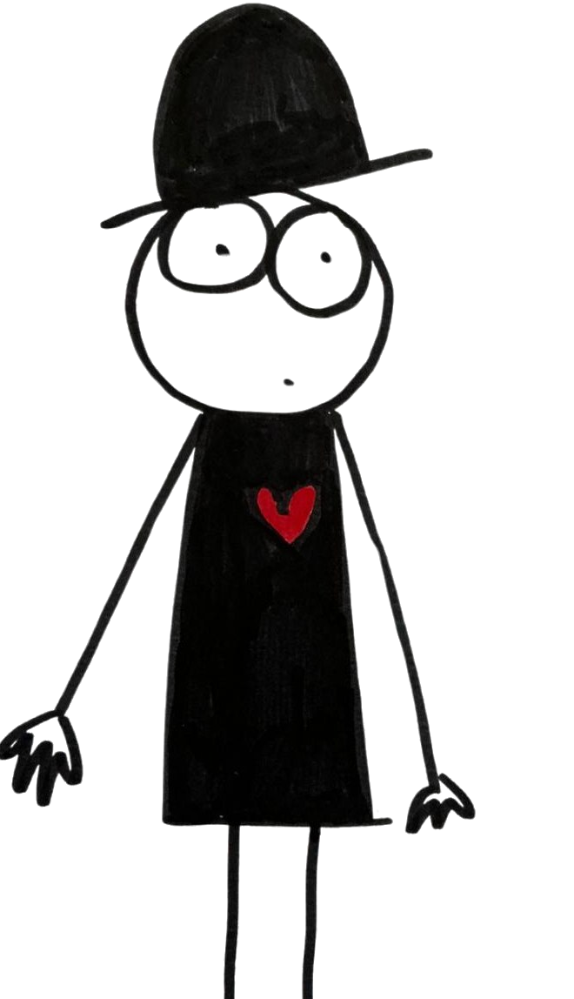
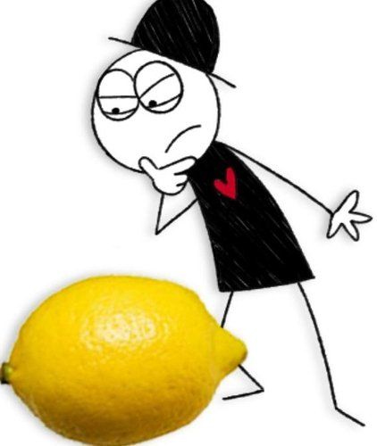
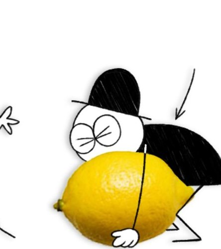
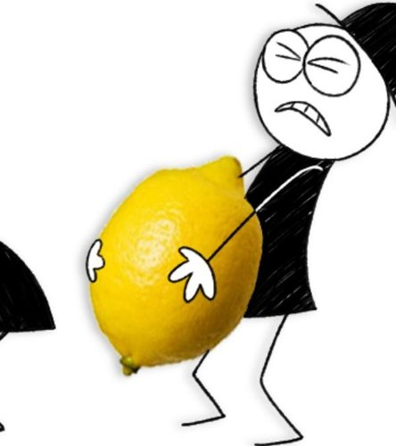
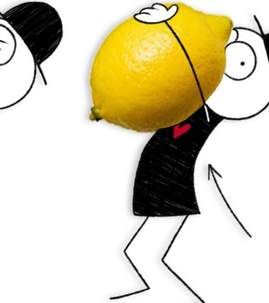
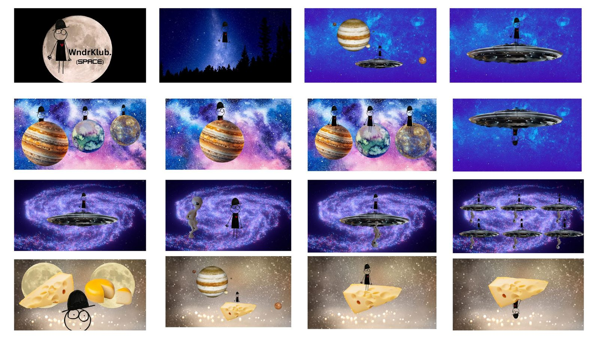
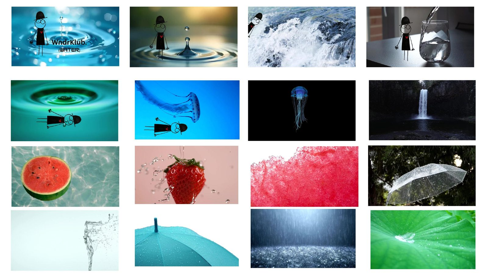
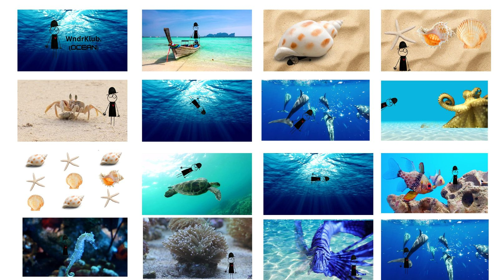

A curious creative philosophy
for 3 to 7 year olds.
A creative philosophy. A living art gallery of the everyday. Inviting children to ask themselves, simply…
The sway of trees in the wind. The reflection of clouds on water. The shadow stretching across a doorway. The texture of a weathered wall. The ripple of movement in a busy street. The way sound and silence shape a moment.
What’s the story here? How does this moment feel? Who are we meant to be watching, and what happens next?
They see life not as a blur, but as a series of shots and scenes, each one carefully framed by perspective and emotion. To them, every ordinary moment holds structure: a beginning, a middle, an end, and a feeling beating quietly at its heart.







In a world saturated with moving images,
we give children the power to slow it all down.